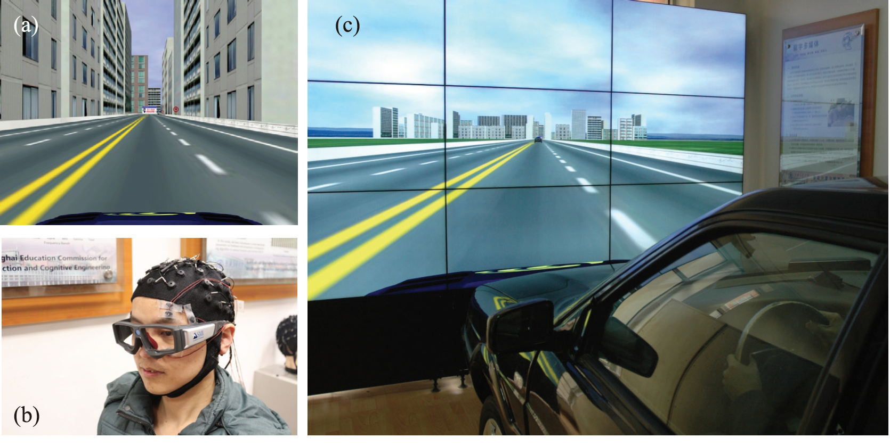
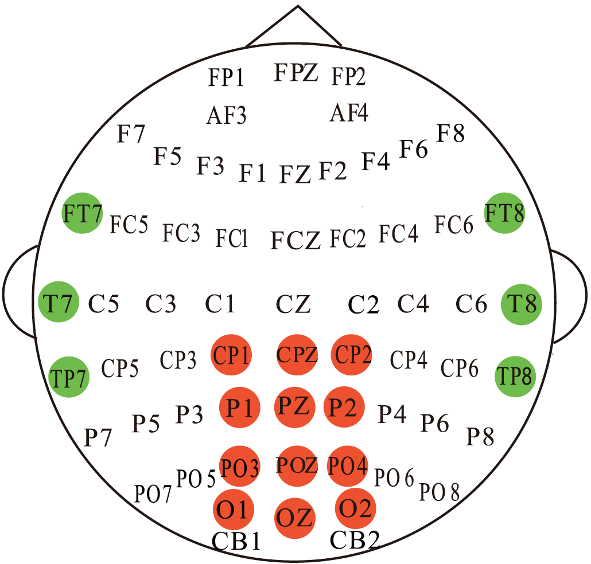
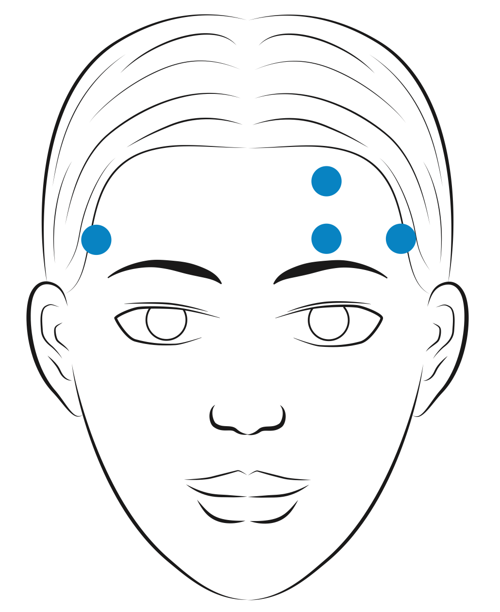

SEED Dataset
A dataset collection for various purposes using EEG signals


Experiment Setup
We developed a simulated driving system to collect the EEG and EOG signals, as well as to label the signals. A four-lane highway scene is shown on a large LCD screen in front of a real vehicle without the unnecessary engine and other components. The vehicle movements in the software are controlled by the steering wheel and gas pedal, and the scenes are simultaneously updated according to the participants’ operations. The road is primarily straight and monotonous to induce fatigue in the subjects more easily. The simulated driving system and the experimental scene are:|  |
 |
 |
Feature Extraction
For the temporal and occipital channels, PSD and DE features are directly extracted at the frequency bands referred above. For the forehead channels, we decompose the original EEG signals to forehead EEG signals (which is mostly related to the subjects' brain activity) and EOG signals (which is mostly related to the subjects' eye motion induced electrical field fluctuation, by means of ICA and minus methods. The EOG components are then used to produce 36 eye motion related features. The SMI eye-tracking glasses provides information about eye closure, so we can simply calculate the PERCLOS labels by the following formulation.Dataset Summary
The SEED-VIG dataset is composed of four parts.-
EEG features include:
- EEG_Feature_2Hz: EEG features (power spectral density: PSD, differential entropy: DE) from the total frequency band (1~50 Hz) with a 2 Hz frequency resolution. The fields "psd_movingAve", "psd_LDS", "de_movingAve", and "de_LDS" indicate PSD with moving average, PSD with linear dynamic system, DE with moving average, and DE with linear dynamic system, respectively. The data format is channel*sample_number*frequency_bands (17*885*25). The first 1-5 in the first dimension 'channel' are corresponding to temporal brain areas, and the last 7-17 are corresponding to posterior brain areas.
- EEG_Feature_5Bands: This is similar to the EEG_feature_2Hz file except that EEG features (PSD, DE) are extracted from five frequency bands: delta (1~4 Hz), theta (4~8 Hz), alpha (8~14 Hz), beta (14~31 Hz), and gamma (31~50 Hz). The data format is channel*sample number*frequency bands (17*885*5).
- Forehead EEG feature files have similar architecture with EEG feature's, but there has only four channels for the data tensor (4*885*25 and 4*885*5).
- EOG features. The fields "features_table_ica", "features_table_minus", and "features_table_icav_minh" indicate forehead EOG features corresponding to different VEO and HEO separation methods using ICA and minus approaches. The data format is sample number*feature dimension (885*36).
- The PERCLOS label files contain continuous vigilance labels (range from 0 to 1) calculated from eye tracking data.
Download
References
1. Wei-Long Zheng and Bao-Liang Lu, A multimodal approach to estimating vigilance using EEG and forehead EOG. Journal of Neural Engineering, 14(2): 026017, 2017. [link] [BibTex]